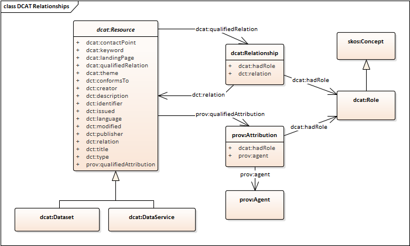
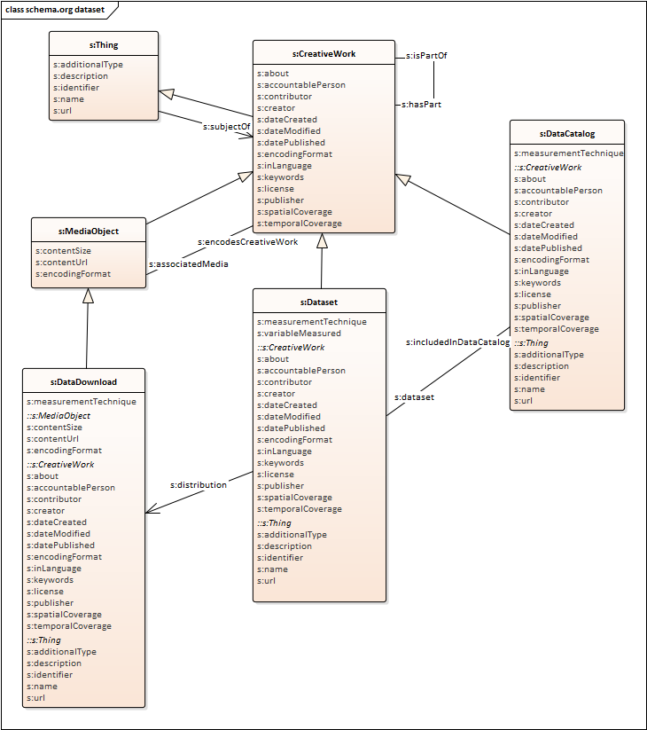

DCAT is an RDF vocabulary designed to facilitate interoperability between data catalogs published on the Web.
This document defines the schema and provides examples for its use.
DCAT enables a publisher to describe datasets and data services in a catalog using a standard model and vocabulary that facilitates the consumption and aggregation of metadata from multiple catalogs.
This can increase the discoverability of datasets and data services.
It also makes it possible to have a decentralized approach to publishing data catalogs and makes federated search for datasets across catalogs in multiple sites possible using the same query mechanism and structure.
Aggregated DCAT metadata can serve as a manifest file as part of the digital preservation process.
The namespace for DCAT terms is http://www.w3.org/ns/dcat#
The suggested prefix for the DCAT namespace is dcat
addition of a dcat:Resource class for representing any resource than can be included in the catalog, this is
now the super-class of dcat:Dataset
addition of dcat:DataService, as a sub-class of dcat:Resource, to support cataloguing service end-points providing access to resources
addition of dcat:DataDistributionService, as a sub-class of dcat:DataService,
representing service end-points providing access to datasets through their distributions, respectively
addition of ways to representing loosely structured catalogs, where there is no distinction between a dataset and its distributions
an alignment between the DCAT vocabulary and the schema.org vocabulary
The detailed differences between the two documents can be seen here
and the list of all the changes since the previous version of DCAT in the Change History section.
DCAT history
The original DCAT vocabulary was developed and hosted at the Digital Enterprise Research Institute (DERI), then refined by the eGov Interest Group, and finally standardized in 2014 [[?VOCAB-DCAT-20140116]] by the Government Linked Data (GLD) Working Group.
This revised version of DCAT was developed by the Dataset Exchange Working Group in response to a new set of Use Cases and Requirements [[?DCAT-UCR]] submitted on the basis of experience with the DCAT vocabulary from the time of the original version, and new applications not originally considered. A summary of the changes from [[?VOCAB-DCAT-20140116]] can be found at Change History
External terms
DCAT incorporates terms from pre-existing vocabularies where stable terms with appropriate meanings could be found, such as foaf:homepage and dct:title.
Informal summary definitions of the externally-defined terms are included here for convenience, while authoritative definitions are available in the normative references.
Changes to definitions in the references, if any, supersede the summaries given in this specification.
Note that conformance to DCAT (Section 4) concerns usage of only the terms in the DCAT namespace itself, so possible changes to the external definitions will not affect the conformance of DCAT implementations.
Please send comments
Introduction
Sharing data resources among different organizations, researchers, governments and citizens requires the provision of metadata.
This is irrespective of the data being open or not.
DCAT is a vocabulary for publishing data catalogs on the Web, which was originally developed in the context of government data catalogs
such as data.gov and data.gov.uk, but it has also been used in other contexts.
This revision of DCAT has extended the previous version to support further use cases and requirements [[?DCAT-UCR]].
These include the possibility of cataloguing other data resources in addition to
datasets, such as data services. The revision also supports describing relationships between datasets as well as between
datasets and other catalogued resources, guidance on how to document licenses and rights statements associated with the catalogued items.
DCAT provides RDF classes and properties to allow datasets and data services to be described and included in a catalog.
The use of a standard model and vocabulary facilitates the consumption and aggregation of metadata from multiple catalogs, which can:
increase the discoverability of datasets and data services
allow federated search for datasets across catalogs in multiple sites
Data can come in many formats, ranging from spreadsheets, through XML and RDF, to various specialty formats.
DCAT does not make any assumptions about the serialization format of the datasets described in a catalog, but it does
distinguish between the abstract dataset and its different manifestations or distributions.
Data is often provided through a service, accessed through a form or API which supports selection of an extract, sub-set, or combination of data.
DCAT allows the description of a data access service to be included in a catalog.
Complementary vocabularies can be used together with DCAT to provide more detailed format-specific information.
For example, properties from the VoID vocabulary [[?VOID]] can be used to express various statistics about a DCAT-described dataset if that dataset is in RDF format.
This document does not prescribe any particular method of deploying data expressed in DCAT.
DCAT is applicable in many contexts including RDF accessible via SPARQL endpoints, embedded in HTML pages as [[?HTML-RDFa]], or serialized as RDF/XML [[?RDF-SYNTAX-GRAMMAR]], [[?N3]], [[?Turtle]], [[?JSON-LD]] or other formats.
Within this document the examples use Turtle because of its readability.
Motivation for change
The original Recommendation [[?VOCAB-DCAT-20140116]], published in January 2014, provided the basic framework for describing datasets. Importantly, it made the distinction between a dataset as an abstract idea and a distribution as a manifestation of the dataset. Although DCAT has been widely adopted, it has become clear that the original specification lacked a number of essential features that were added either through application profiles, such as the European Commission's DCAT-AP [[?DCAT-AP]], or the development of larger vocabularies that, to a greater or lesser extent, built upon the base standard, such as the Healthcare and Life Sciences Community Profile [[?HCLS-Dataset]], the Data Tag Suite [[?DATS]] and more. This version of DCAT has been developed to address the specific shortcomings that have come to light through the experiences of different communities, the aim being, of course, to improve interoperability between the outputs of these larger vocabularies.
For example, in this new DCAT version, we provide classes, properties and guidance to address identifiers, quality information, data citation issues.
This draft includes re-writing of the specification throughout. Significant changes from the 2014 Recommendation are marked within the text using "Note" sections, as well as being described in the Change History.
Namespaces
The namespace for DCAT is http://www.w3.org/ns/dcat#.
However, note that DCAT makes extensive use of terms from other vocabularies, in particular Dublin Core [[?DCTERMS]].
DCAT defines a minimal set of classes and properties of its own.
A full set of namespaces and prefixes used in this document is shown in the table below.
Prefix
Namespace
adms
https://www.w3.org/ns/adms#
dcat
http://www.w3.org/ns/dcat#
dct
http://purl.org/dc/terms/
dctype
http://purl.org/dc/dcmitype/
dqv
http://www.w3.org/ns/dqv#
foaf
http://xmlns.com/foaf/0.1/
owl
http://www.w3.org/2002/07/owl#
prov
http://www.w3.org/ns/prov#
rdf
http://www.w3.org/1999/02/22-rdf-syntax-ns#
rdfs
http://www.w3.org/2000/01/rdf-schema#
schema
https://schema.org/
skos
http://www.w3.org/2004/02/skos/core#
vcard
http://www.w3.org/2006/vcard/ns#
xsd
http://www.w3.org/2001/XMLSchema#
Modified from DCAT 2014 [[?VOCAB-DCAT-20140116]]
A data catalog conforms to DCAT if:
Access to data is organized into datasets, distributions, and data-services.
An RDF description of the catalog itself and its datasets, distributions, and data-services is available (but the choice of
RDF syntaxes, access protocols, and access policies is not mandated by this specification).
The contents of all metadata fields that are held in the catalog, and that contain data about the catalog itself and its datasets, distributions, and data-services, are included in this RDF description, expressed using the appropriate classes and properties from DCAT, except where no such class or property exists.
All classes and properties defined in DCAT are used in a way consistent with the semantics declared in this specification.
DCAT-compliant catalogs MAY include additional non-DCAT metadata fields and additional RDF data in the catalog's RDF description.
A DCAT profile is a specification for data catalogs that adds additional constraints to DCAT. A data catalog that conforms to the profile also conforms to DCAT. Additional constraints in a profile MAY include:
Cardinality constraints, including a minimum set of required metadata fields
Sub-classes and sub-properties of the standard DCAT classes and properties
Classes and properties for additional metadata fields not covered in DCAT
Controlled vocabularies or URI sets as acceptable values for properties
Requirements for specific access mechanisms (RDF syntaxes, protocols) to the catalog's RDF description
Vocabulary overview
DCAT scope
DCAT is an RDF vocabulary for representing data catalogs.
DCAT is based around eight main classes:
dcat:Catalog represents a catalog, which is a dataset in which each individual item is a metadata record describing some resource; the scope of dcat:catalog is collections of metadata about datasets or data services.
dcat:Resource represents an individual item in a catalog.
This class is not intended to be used directly, but is the parent class of dcat:Dataset, dcat:DataService and dcat:Catalog.
Member items in a catalog should be members of one of the sub-classes, or of a sub-class of these, or of a sub-class of dcat:Resource defined in a DCAT application profile or other DCAT application.
dcat:Resource is effectively an extension point for defining a catalog of any kind of resource.
dcat:Dataset represents a dataset in a catalog.
A dataset is a collection of data, published or curated by a single agent.
Data comes in many forms, including numbers, words, pixels, imagery, sound and other multi-media, and potentially other types, any of which might be collected into a dataset.
dcat:Distribution represents an accessible form of a dataset, for example a downloadable file.
dcat:DataService represents a data service in a catalog.
A data service is a collection of operations, accessible through an interface (API) that provide access to one or more datasets or data processing functions.
dcat:DataDistributionService represents a kind of data service that provides access to distributions of one or more datasets or extracts of datasets.
dcat:CatalogRecord represents a metadata item in the catalog, primarily concerning the registration information, such as who added the item and when.
Overview of DCAT model, showing the classes of resources that can be members of a Catalog, and the relationships between them.
Along with the rest of the Vocabulary overview, this diagram is non-normative.
Furthermore, while the diagram uses UML-style class notation, it should be interpreted following the usual RDF open-world assumptions around the presence/absence of properties, relationships, and their cardinality.
The properties shown in each class reflect those recommended in the descriptions of classes in the Vocabulary specification.
To assist in understanding the full scope of each class, properties are copied down from each '::super-class'.
Cardinalities are shown in a few places to reinforce expectations, but these are not axiomatized or enforced in any way by this recommendation.
A dataset in DCAT is defined as a "collection of data, published or curated by a single agent, and available for access or download in one or more serializations or formats".
A dataset is a conceptual entity, and can be represented by one or more distributions that serialize the dataset for transfer.
Distributions of a dataset can be provided via data distribution services.
Detailed properties for a data distribution service API are out of the scope of this version of DCAT.
A data service in DCAT is a collection of operations or API which provides access to data.
An interactive interface such as a web form is often provided to access to the API operations.
A data service typically provides selection, extraction, combination, processing or transformation operations over datasets that might be hosted locally or remote to the service.
A data service might be tied to specific datasets, or its source data might be configured at request- or run-time.
The result of a request to a data service is a representation of a part or all of a dataset or catalog.
A data distribution service is a kind of data service that provides the means to select and download a distribution of a dataset or subset.
A data discovery service is a kind of data service that provides the means to find the description of a suitable dataset, often through a portal or catalog service.
Other kinds of data service might include data transformation services such as coordinate transformation services, re-sampling and interpolation services, and various data processing services, but these are outside the scope of the current DCAT vocabulary.
Descriptions of datasets and data services can be included in a catalog.
A catalog is a kind of dataset whose member items are descriptions of datasets and data services.
Other types of thing might also be catalogued, but the scope of DCAT is currently limited to datasets and data services.
To extend the scope of a catalog beyond datasets and data services it is recommended to define additional sub-classes of dcat:Resource in a DCAT application profile or other DCAT application.
To extend the scope of service descriptions beyond data distribution services it is recommended to define additional sub-classes of dcat:DataService in a DCAT application profile or other DCAT application.
The scope of DCAT 2014 [[?VOCAB-DCAT-20140116]] was limited to catalogs of datasets.
A number of use cases for the revision involve data distribution services as members of a catalog - see DCAT Distribution to describe web services - ID6 and
Modeling service-based data access - ID18.
Hence, the scope of this revision of DCAT includes both datasets and data services, with an explicit class for Data Distribution Services, to enable these to be part of a DCAT conformant catalog.
Provision for other data services to also be part of a Catalog is also made, as well as for Catalogs to be composed of other Catalogs.
See Issue #172.
Catalogs of other kinds of things might be designed following the DCAT pattern, e.g. dealing with facilities, instruments, samples and specimens, other physical artefacts, events or activities.
These are currently out of scope for DCAT, but might be defined through further sub-classes of dcat:Resource, which could be specified in a DCAT application profile or other DCAT application.
A CatalogRecord describes an entry in the catalog. Notice that while dcat:Resource represents the dataset or service itself, dcat:CatalogRecord is the record that describes the registration of an item in the catalog. The use of explicit dcat:CatalogRecord is considered optional. It is used to capture provenance information about entries in a catalog explicitly. If this is not necessary then dcat:CatalogRecord can be safely ignored.
RDF considerations
The DCAT vocabulary is an OWL2 ontology [[?OWL2-OVERVIEW]] formalized using [[?RDF-SCHEMA]].
Each class and property in DCAT is denoted by an [[?IRI]].
Locally defined elements are in the namespace http://www.w3.org/ns/dcat#.
Elements are also adopted from several external vocabularies, in particular [[?FOAF]], [[?DCTERMS]] and [[?PROV-O]]
RDF allows resources to have global identifiers (IRIs) or to be blank nodes.
Blank nodes can be used to denote resources without explicitly naming them with an IRI.
They can appear in the subject and object position of a triple [[?RDF11-PRIMER]].
For example, in many actual DCAT catalogs, distributions are represented as blank nodes nested inside the related dataset description.
While blank nodes can offer flexibility for some use cases, in a Linked Data context, blank nodes limit our ability to collaboratively annotate data.
A blank node resource cannot be the target of a link and it can't be annotated with new information from new sources.
As one of the biggest benefits of the Linked Data approach is that "anyone can say anything anywhere", use of blank nodes undermines some of the advantages we can gain from wide adoption of the RDF model.
Even within the closed world of a single application dataset, use of blank nodes can quickly become limiting when integrating new data [[?LinkedDataPatterns]].
For these reasons, it is recommended that instances of the DCAT main classes have a global identifier, and use of blank nodes is generally discouraged when encoding DCAT in RDF.
All RDF examples in this document are written in Turtle syntax [[?Turtle]] and many are available from the DXWG code repository.
Each RDF example in this document is intended to demonstrate specific capabilities of DCAT, and therefore only shows a subset of all the potential properties and links which might appear in a complete DCAT resource.
Basic Example
This example provides a quick overview of how DCAT might be used to represent a government catalog and its datasets.
The publisher of the catalog has the relative URI :transparency-office. Further description of the publisher can be provided as in the following example:
:transparency-office
a foaf:Organization ;
rdfs:label "Transparency Office" ;
.
The catalog lists each of its datasets via the dcat:dataset property. In the example above, an example dataset was mentioned with the relative URI :dataset-001. A possible description of it using DCAT is shown below:
Five distinct temporal descriptors are shown for this dataset.
The dataset publication and revision dates are shown in dct:issued and dct:modified.
For the frequency of update of the dataset in dct:accrualPeriodicity, we use an instance from the Content-Oriented Guidelines developed as part of the W3C Data Cube Vocabulary [[?VOCAB-DATA-CUBE]] efforts.
The temporal coverage or extent is given in dct:temporal using an item from the Interval dataset (originally available from http://reference.data.gov.uk/id/interval) from data.gov.uk.
The temporal resolution, which describes the minimum spacing of items within the dataset, is given in dcat:temporalResolution using the standard datatype xsd:duration.
Additionally, the spatial coverage or extent is given dct:spatial using a URI from Geonames.
The spatial resolution, which describes the minimum spatial separation of items within the dataset, is given in dcat:spatialResolutionInMeters using the standard datatype xsd:decimal.
A contact point is provided where comments and feedback about the dataset can be sent.
Further details about the contact point, such as email address or telephone number, can be provided using vCard [[?VCARD-RDF]].
One representation of the dataset :dataset-001-csv can be downloaded as a 5Kb CSV file. This is
represented as an RDF resource of type dcat:Distribution.
:dataset-001-csv
a dcat:Distribution ;
dcat:downloadURL <http://www.example.org/files/001.csv> ;
dct:title "CSV distribution of imaginary dataset 001" ;
dcat:mediaType <https://www.iana.org/assignments/media-types/text/csv> ;
dcat:byteSize "5120"^^xsd:decimal ;
.
Classifying datasets thematically
The catalog classifies its datasets according to a set of domains represented by the relative URI :themes. SKOS can be used to describe the domains used:
:catalog dcat:themeTaxonomy :themes .
:themes
a skos:ConceptScheme ;
skos:prefLabel "A set of domains to classify documents" ;
.
:dataset-001 dcat:theme :accountability .
Notice that this dataset is classified under the domain represented by the relative URI :accountability.
It is recommended to define the concept as part of the concepts scheme identified by the URI :themes that was used to describe the catalog domains. An example SKOS description:
The type or genre of a dataset can be indicated using the dct:type property.
It is recommended that the value of the property is be taken from a well governed and broadly recognised set of resource types,
such as the DCMI Type Vocabulary,
the MARC Genre/Terms Scheme,
the ISO 19115 MD_Scope codes,
the DataCite resource types,
or the PARSE.Insight content-types from Re3data [[?RE3DATA-SCHEMA]].
In the following examples, a (notional) dataset is classified separately using values from different vocabularies.
If the catalog publisher decides to keep metadata
describing its records (i.e. the records containing metadata
describing the datasets), dcat:CatalogRecord can be used. For example,
while :dataset-001 was issued on 2011-12-05, its description on Imaginary Catalog was added on 2011-12-11. This can be represented by DCAT as in the following:
:dataset-002 is available as a CSV file. However :dataset-002 can only be obtained through some Web page
where the user needs to follow some links, provide some information and check some boxes
before accessing the data.
Notice that we used dcat:downloadURL with the downloadable distribution and that the other distribution accessible through the landing page
does not have to be defined as a separate dcat:Distribution instance.
A dataset available through a service
:dataset-004 is distributed in different representations from different services.
The dcat:accessURL for each dcat:Distribution corresponds with the dcat:endpointURL of the service.
Each service is characterized by its general type using dct:type (here using values from the INSPIRE spatial data service type vocabulary),
its specific API definition using dct:conformsTo,
with the detailed description of the individual endpoint parameters and options linked using dcat:endpointDescription.
The DCAT RDF representation is modularized into several files or graphs to help users access a version of DCAT with only the alignments that they need.
This mechanism can also be used to capture different levels of axiomatization, though the status of such proposals has not been finalized.
See Issue #134 and the issues enumerated below.
The use of guarded constraints (existence, cardinality, range-type) to control the use of the recommended properties in the context of a class is being considered as part of the revision of DCAT.
The (revised) DCAT vocabulary is available in RDF.
The primary artefact dcat.ttl is a serialization of the core DCAT vocabulary.
Alongside it are a set of other RDF files that provide additional information, including:
alignments to other vocabularies, some of which are normative and some of which are only for guidance
additional axioms, which can be useful in some contexts
some profiles of DCAT, including a profile that corresponds to the 2014 version of DCAT [[?VOCAB-DCAT-20140116]]
Elements from other vocabularies
DCAT requires use of elements from a number of other vocabularies.
Furthermore, DCAT may be augmented by additional elements from external vocabularies, following the usual RDFS [[!RDF-SCHEMA]] and OWL2 [[!OWL2-OVERVIEW]] rules and patterns.
Complementary vocabularies
Elements from a number of complementary vocabularies MAY be used together with DCAT to provide more detailed information.
For example: properties from the VoID vocabulary [[?VOID]] allow the description of various statistics about a DCAT-described dataset if that dataset is in RDF format; properties from the Provenance ontology [[!PROV-O]] can be used to provide more information about the workflow that generated a dataset or service and related activities and agents; classes and properties from the Organization Ontology [[!VOCAB-ORG]] can be used to explain additional details of responsible agents.
Element definitions
The definitions (including domain and range) of terms outside the DCAT namespace are provided here only for convenience and MUST NOT be considered normative. The authoritative definitions of these terms are in the corresponding specifications, i.e. [[!DC11]], [[!DCTERMS]], [[!FOAF]], [[!PROV-O]], [[!RDF-SCHEMA]], [[!SKOS-REFERENCE]], [[!XMLSCHEMA11-2]] and [[?VCARD-RDF]].
The scope of DCAT 2014 was catalogs of datasets [[?VOCAB-DCAT-20140116]].
A number of use cases for the revision involve also having data distribution services as members of a catalog - see DCAT Distribution to describe web services - ID6 and
Modeling service-based data access - ID18.
It has been decided to add an explicit class for Data Distribution Services in this revision of DCAT, and to enable these to be part of a Catalog.
Provision for other services to also be part of a Catalog is also enabled, as well as for Catalogs to be composed of other Catalogs.
See Issue #172 and Issue #116.
foaf:homepage is an inverse functional property (IFP) which means that it MUST be unique and precisely identify the web-page for the resource. This property indicates the canonical web-page, which might be helpful in cases where there is more than one web-page about the resource.
The possible association of items with zero or multiple catalogs has been identified as a requirement to be satisfied in the revision of DCAT.
The need to be able to describe the business or project context related to production of a catalogued resource has been identified as a requirement to be satisfied in the revision of DCAT.
The class of all catalogued resources, the superclass of
dcat:Dataset, dcat:DataService, dcat:Catalog and any other member of a dcat:Catalog.
This class carries properties common to all catalogued resources, including datasets and data services.
It is strongly recommended to use a more specific sub-class when available.
Usage note:
dcat:Resource is an extension point that enables the definition of any kind of catalog. Additional subclasses may be defined in a DCAT application profile or other DCAT application for catalogs of other kinds of resources
An established standard to which the described catalogued resource conforms.
Range:
dct:Standard (A basis for comparison; a reference point against which other things can be evaluated.)
Usage note:
This property SHOULD be used to indicate the model, schema, ontology, view or profile that the catalogued resource content conforms to.
dct:Standard is defined as "A basis for comparison; a reference point against which other things can be evaluated." The target resource is not restricted to formal standards issued by bodies like ISO and W3C. In this context, it is any resource that specifies one or more aspects of the catalogued resource content, for example schema, semantics, syntax, usage guidelines, file format, or specific serialization. The meaning of conformance is determined by provisions in the target standard.
Property: contact point
In DCAT 2014 [[VOCAB-DCAT-20140116]] the domain of dcat:contactPoint was dcat:Dataset, which limited use of this property in other contexts. The domain has been relaxed in this revision - see Issue #95.
New property added in this revision of DCAT, specifically added when considering the data citation requirement and
added to the dcat:Resource class, as the Dataset superclass. For more details, see
the data citation section.
The use of the [[?PROV-O]] qualified-attribution pattern is described below.
`dct:creator` corresponds with a general attribution with the role 'creator'.
Date of formal issuance (e.g., publication) of the item.
Range:
rdfs:Literal
encoded using the relevant ISO 8601 Date and Time compliant string [[?DATETIME]] and typed using the appropriate XML Schema datatype [[!XMLSCHEMA11-2]]
Usage note:
This property SHOULD be set using the first known date of issuance.
Most recent date on which the item was changed, updated or modified.
Range:
rdfs:Literal
encoded using the relevant ISO 8601 Date and Time compliant string [[?DATETIME]] and typed using the appropriate XML Schema datatype [[!XMLSCHEMA11-2]]
Usage note:
The value of this property indicates a change to the actual item, not a change to the catalog record. An absent value MAY indicate that the item has never changed after its initial publication, or that the date of last modification is not known, or that the item is continuously updated.
A language of the item. This refers to the natural language used for textual metadata (i.e. titles, descriptions, etc) of a catalogued resource (i.e. dataset or service) or the textual values of a dataset distribution
Range:
dct:LinguisticSystem
Resources defined by the Library of Congress (1,
2) SHOULD be used.
If a ISO 639-1 (two-letter) code is defined for language, then its corresponding IRI SHOULD be used; if no ISO 639-1 code is defined, then IRI corresponding to the ISO 639-2 (three-letter) code SHOULD be used.
Usage note:
Repeat this property if the resource is available in multiple languages.
Usage note:
The value(s) provided for members of a catalog (i.e. dataset or service) override the value(s) provided for the catalog if they conflict.
Usage note:
If representations of a dataset are available for each language separately, define an instance of dcat:Distribution for each language and describe the specific language of each distribution using dct:language (i.e. the dataset will have multiple dct:language values and each distribution will have just one as the value of its dct:language property).
Property: publisher
The use of the [[?PROV-O]] qualified-attribution pattern is described below.
`dct:publisher` corresponds with a general attribution with the role 'publisher'.
The identifier might be used as part of the URI of the item, but still having it represented explicitly is useful.
Property: theme/category
In DCAT 2014 [[?VOCAB-DCAT-20140116]] the domain of dcat:theme was dcat:Dataset,
which limited use of this property in other contexts. The domain has been relaxed in this revision -
see Issue #123.
The set of skos:Concepts used to categorize the resources are organized in a skos:ConceptScheme describing all the categories and their relations in the catalog.
Some members of these controlled vocabularies are not strictly suitable for datasets or data services (e.g. DCMI Type Event, PhysicalObject; ISO 19115 CollectionHardware, CollectionSession, Initiative, Sample, Repository), but might be used in the context of other kinds of catalogs defined in DCAT profiles or applications.
Usage note:
To describe the file format, physical medium, or dimensions of the resource, use the dct:format element.
A resource with an unspecified relationship to the catalogued item.
Usage note:
dct:relationSHOULD be used where the nature of the relationship between a catalogued item and related resources is not known. A more specific sub-property SHOULD be used if the nature of the relationship of the link is known.
The property dcat:distributionSHOULD be used to link from a dcat:Dataset to a representation of the dataset, described as a dcat:Distribution
Many existing and legacy catalogues do not distinguish between dataset components, representations, documentation, schemata and other resources that are lumped together as part of a dataset.
dct:relation is a super-property of a number of more specific properties which express more precise relationships, so use of dct:relation is not inconsistent with a subsequent reclassification with more specific semantics, though the more specialized sub-properties SHOULD be used to link a dataset to component and supplementary resources if possible.
Use of this Dublin Core Terms property in this context added in this revision of DCAT.
Used to link to another resource where the nature of the relationship is known but does not match one of the standard Dublin Core properties (dct:hasPart, dct:isPartOf, dct:conformsTo, dct:isFormatOf, dct:hasFormat, dct:isVersionOf, dct:hasVersion, dct:replaces, dct:isReplacedBy, dct:references, dct:isReferencedBy, dct:requires, dct:isRequiredBy) or PROV-O properties (prov:wasDerivedFrom, prov:wasInfluencedBy, prov:wasQuotedFrom, prov:wasRevisionOf, prov:hadPrimarySource, prov:alternateOf, prov:specializationOf).
In DCAT 2014 [[?VOCAB-DCAT-20140116]] the domain of dcat:keyword was dcat:Dataset, which limited use of this property in other contexts. The domain has been relaxed in this revision - see Issue #121.
In DCAT 2014 [[?VOCAB-DCAT-20140116]] the domain of dcat:landingPage was dcat:Dataset, which limited use of this property in other contexts. The domain has been relaxed in this revision - see Issue #122.
If the distribution(s) are accessible only through a landing page
(i.e. direct download URLs are not known), then the landing page link SHOULD be duplicated as dcat:accessURL on a distribution. (see )
Used to link to an Agent where the nature of the relationship is known but does not match one of the standard Dublin Core properties (dct:creator, dct:publisher).
Use dcat:hadRole on the prov:Attribution to capture the responsibility of the Agent with respect to the Resource.
See https://w3c.github.io/dxwg/dcat/#qualified-attribution for usage examples.
Information about rights expressed as ODRL [[ODRL-VOCAB]] policies MAY be provided for the Resource. See also guidance at License and rights statements.
The need to be able to express rights relating to the re-use of DCAT metadata has been identified as a requirement to be satisfied in the revision of DCAT.
The need to be able to link a metadata record to its original source has been identified as a requirement to be satisfied in the revision of DCAT.
A record in a catalog, describing the registration of a single dcat:Resource.
Usage note
This class is optional and not all catalogs will use it. It exists for catalogs where a distinction is made between metadata about
a dataset or service and metadata about the entry in the catalog about the dataset or service. For example, the publication date property of the dataset reflects
the date when the information was originally made available by the publishing agency, while the publication date of the catalog record is the date when the dataset was added to the catalog.
In cases where both dates differ, or where only the latter is known, the publication dateSHOULD only be specified for the catalog record.
Notice that the W3C PROV Ontology [[?PROV-O]] allows describing further provenance information such as the details of the process and the agent involved in a particular change to a dataset or its registration.
If a catalog is represented as an RDF Dataset with named graphs (as defined in [[!SPARQL11-QUERY]]),
then it is appropriate to place the description of each dataset
(consisting of all RDF triples that mention the dcat:Dataset, dcat:CatalogRecord, and any of its dcat:Distributions)
into a separate named graph. The name of that graph SHOULD be the IRI of the catalog record.
The date of listing (i.e. formal recording) of the corresponding dataset or service in the catalog.
Range:
rdfs:Literal
encoded using the relevant ISO 8601 Date and Time compliant string [[?DATETIME]] and typed using the appropriate XML Schema datatype [[!XMLSCHEMA11-2]]
Usage note:
This indicates the date of listing the dataset in the catalog and not the publication date of the dataset itself.
Most recent date on which the catalog entry was changed, updated or modified.
Range:
rdfs:Literal
encoded using the relevant ISO 8601 Date and Time compliant string [[?DATETIME]] and typed using the appropriate XML Schema datatype [[!XMLSCHEMA11-2]]
Usage note:
This indicates the date of last change of a catalog entry, i.e. the catalog metadata description of the dataset, and not the date of the dataset itself.
An established standard to which the described resource conforms.
Range:
dct:Standard (A basis for comparison; a reference point against which other things can be evaluated.)
Usage note:
This property SHOULD be used to indicate the model, schema, ontology, view or profile that the catalog record metadata conforms to.
dct:Standard is defined as "A basis for comparison; a reference point against which other things can be evaluated." The target resource is not restricted to formal standards issued by bodies like ISO and W3C. In this context, it is any resource that specifies one or more aspects of the catalog record content, for example schema, semantics, syntax, usage guidelines, file format, or specific serialization. The meaning of conformance is determined by provisions in the target standard.
Information about licenses and rights SHOULD be provided on the level of Distribution. Information about licenses and rights MAY be provided for a Dataset in addition to but not instead of the information provided for the Distributions of that Dataset. Providing license or rights information for a Dataset that is different from information provided for a Distribution of that Dataset SHOULD be avoided as this can create legal conflicts.
The need to provide richer descriptions of dataset aspects (e.g. instrument/sensor used, spatial feature, observable property, quantity kind) has been identified as a requirement to be satisfied in the revision of DCAT.
The need to be able to link a dataset with publications arising from it has been identified as a requirement to be satisfied in the revision of DCAT.
The need provide a more comprehensive method for describing dataset provenance has been identified as a requirement to be satisfied in the revision of DCAT.
A preliminary alignment of DCAT with PROV-O is available.
The need to be able to provide summary statistics about a dataset has been identified as a requirement to be satisfied in the revision of DCAT.
The need to be able to provide usage notes for a dataset or distribution has been identified as a requirement to be satisfied in the revision of DCAT.
This class describes the conceptual dataset. One or more representations might be available, with differing schematic layouts and formats or serializations.
Usage note:
This class describes the actual dataset as published by the dataset provider. In cases where a distinction between the actual dataset and its entry in the catalog is necessary (because metadata such as modification date and maintainer might differ), the catalog record class can be used for the latter.
In DCAT 2014 [[?VOCAB-DCAT-20140116]] dcat:Dataset was a sub-class of dctype:Dataset, which is a member of the DCMI Types vocabulary [[?DCTERMS]].
The scope of dcat:Dataset also includes other members of the DCMI Types vocabulary, such as various multimedia (imagery, sound, video) and text, so the sub-class relationship from DCAT 2014 [[?VOCAB-DCAT-20140116]] has been removed in this revised DCAT vocabulary - see Issue #98.
The value of dct:accrualPeriodicity gives the rate at which the dataset-as-a-whole is updated. This may be complemented by dcat:temporalResolution to give the time between collected data points in a time series.
For example, a 15-minute time-series that is published daily could be described
The need to indicate the spatial reference system used in the spatial description of a dataset has been identified as a requirement to be satisfied in the revision of DCAT.
The need to be able to describe the spatial coverage of a dataset as a geometry has been identified as a requirement to be satisfied in the revision of DCAT.
If the dataset is an image or grid this should correspond to the spacing of items. For other kinds of spatial dataset, this property will usually indicate the smallest distance between items in the dataset.
The range of this property is a decimal number representing a length in meters.
This is intended to provide a summary indication of the spatial resolution of the data as a single number.
More complex descriptions of various aspects of spatial precision, accuracy, resolution and other statistics can be provided using the Data Quality Vocabulary [[VOCAB-DQV]].
New property in this context in this revision of DCAT.
Property: temporal coverage
The need to be able to describe the temporal coverage of a dataset in a structured way has been identified as a requirement to be satisfied in the revision of DCAT.
If the dataset is a time-series this should correspond to the spacing of items in the series. For other kinds of dataset, this property will usually indicate the smallest time difference between items in the dataset.
This is intended to provide a summary indication of the temporal resolution of the data distribution as a single value.
More complex descriptions of various aspects of temporal precision, accuracy, resolution and other statistics can be provided using the Data Quality Vocabulary [[VOCAB-DQV]].
New property in this context in this revision of DCAT.
prov:Activity An activity is something that occurs over a period of time and acts upon or with entities; it may include consuming, processing, transforming, modifying, relocating, using, or generating entities.
Usage note:
The activity associated with generation of a dataset will typically be an initiative, project, mission, survey, on-going activity ("business as usual") etc. Multiple prov:wasGeneratedBy properties can be used to indicate the dataset production context at various levels of granularity.
Usage note:
Use prov:qualifiedGeneration to attach additional details about the relationship between the dataset and the activity, e.g. the exact time that the dataset was produced during the lifetime of a project
New property in this context in this revision of DCAT.
Details about how to describe the activity that generated a dataset, such as a project, initiative, on-going activity, mission or survey, are out of scope for this document.
prov:Activity provides for some basic properties such as begin and end time, associated agents etc.
Further details may be provided through classes defined in applications.
A number of ontologies for describing projects are available, for example
VIVO for academic research projects [[?VIVO-ISF]],
DOAP (Description of a Project) for software projects [[?DOAP]], and
DBPedia for general projects [[?DBPEDIA-ONT]] which are expected to be suitable for different applications.
A specific representation of a dataset. A dataset might be available in multiple serializations that may differ in various ways, including natural language, media-type or format, schematic organization, temporal and spatial resolution, level of detail or profiles (which might specify any or all of the above).
Usage note:
This represents a general availability of a dataset. It implies no information
about the actual access method of the data, i.e. whether by direct download, API, or through a Web page.
The use of dcat:downloadURL property indicates directly downloadable distributions.
Examples of distributions include a CSV file, a netCDF file, a JSON document, or a data-cube, files made accessible according to different profiles, such as XML or JSON schemas or ShEx or SHACL expressions.
In some cases all distributions of a dataset will be fully informationally equivalent, in the sense that lossless transformations between the representations are possible. An example would be different serializations of an RDF graph using RDF/XML, Turtle, N3, JSON-LD. However, in other cases the distributions might have different levels of fidelity to the underlying data. For example, a graphical representation alongside a CSV file. The question of whether different representations can be understood to be distributions of the same dataset is use-case specific, so the judgement is the responsibility of the provider.
The scope of dcat:Distribution here is narrower than in DCAT-2014 [[?VOCAB-DCAT-20140116]], where it also included APIs and feeds.
Data catalogues designed using DCAT-2014 therefore used instances of type dcat:Distribution to describe data distribution services.
Applications consuming DCAT should be aware that catalogues designed using DCAT-2014 might use dcat:Distribution to represent both services and representations.
Under the revised scope, instances of type dcat:DistributionSHOULD be limited to representations of datasets which might be transported as files, and SHOULD NOT be used for data services such as APIs or feeds. Data services including APIs and feeds SHOULD be described using instances of type dcat:DataService whose sub-class dcat:DataDistributionServiceMAY serve dcat:Distributions.
Links between a dcat:Distribution and services or web addresses where it can be accessed are expressed using dcat:accessURL, dcat:accessService, dcat:downloadURL, as shown in and described in the definitions below.
Date of formal issuance (e.g., publication) of the distribution.
Range:
rdfs:Literal
encoded using the relevant ISO 8601 Date and Time compliant string [[?DATETIME]] and typed using the appropriate XML Schema datatype [[!XMLSCHEMA11-2]]
Usage note:
This property SHOULD be set using the first known date of issuance.
Most recent date on which the distribution was changed, updated or modified.
Range:
rdfs:Literal
encoded using the relevant ISO 8601 Date and Time compliant string [[?DATETIME]] and typed using the appropriate XML Schema datatype [[!XMLSCHEMA11-2]]
Information about licenses and rights SHOULD be provided on the level of Distribution. Information about licenses and rights MAY be provided for a Dataset in addition to but not instead of the information provided for the Distributions of that Dataset. Providing license or rights information for a Dataset that is different from information provided for a Distribution of that Dataset SHOULD be avoided as this can create legal conflicts. See also guidance at License and rights statements.
dct:license, which is a sub-property of dct:rights, can be used to link
a distribution to a license document. However, dct:rights allows linking to a rights statement that
can include licensing information as well as other information that supplements the license such as attribution.
Information about licenses and rights SHOULD be provided on the level of Distribution. Information about licenses and rights MAY be provided for a Dataset in addition to but not instead of the information provided for the Distributions of that Dataset. Providing license or rights information for a Dataset that is different from information provided for a Distribution of that Dataset SHOULD be avoided as this can create legal conflicts. See also guidance at License and rights statements.
Information about rights expressed as ODRL [[ODRL-VOCAB]] policies MAY be provided for the Distribution. See also guidance at License and rights statements.
dcat:accessURLSHOULD be used for the address of a service or location that can provide access to this distribution, typically through a web form, query or API call.
dcat:downloadURL is preferred for direct links to downloadable resources.
If the distribution(s) are accessible only through a landing page (i.e. direct download URLs are not known), then the landingPage address associated with the dcat:DatasetSHOULD be duplicated as accessURL on a distribution. (see )
dcat:accessURL matches the property-chain dcat:accessService/dcat:endpointURL. In the RDF representation of DCAT this is axiomatized as an OWL property-chain axiom.
The URL of the downloadable file in a given format. E.g. CSV file or RDF file. The format is indicated by the distribution's dct:format and/or dcat:mediaType
If the dataset is an image or grid this should correspond to the spacing of items. For other kinds of spatial dataset, this property will usually indicate the smallest distance between items in the dataset.
Usage note:
Alternative spatial resolutions might be provided as different dataset distributions
The range of this property is a decimal number representing a length in meters.
This is intended to provide a summary indication of the spatial resolution of the data distribution as a single number.
More complex descriptions of various aspects of spatial precision, accuracy, resolution and other statistics can be provided using the Data Quality Vocabulary [[VOCAB-DQV]].
New property in this context in this revision of DCAT.
If the dataset is a time-series this should correspond to the spacing of items in the series. For other kinds of dataset, this property will usually indicate the smallest time difference between items in the dataset.
Usage note:
Alternative temporal resolutions might be provided in different dataset distributions
This is intended to provide a summary indication of the temporal resolution of the data distribution as a single value.
More complex descriptions of various aspects of temporal precision, accuracy, resolution and other statistics can be provided using the Data Quality Vocabulary [[VOCAB-DQV]].
New property in this context in this revision of DCAT.
Property: conforms to
New property in this context in this revision of DCAT.
An established standard to which the distribution conforms.
Range:
dct:Standard (A basis for comparison; a reference point against which other things can be evaluated.)
Usage note:
This property SHOULD be used to indicate the model, schema, ontology, view or profile that this representation of a dataset conforms to. This is (generally) a complementary concern to the media-type or format.
dct:Standard is defined as "A basis for comparison; a reference point against which other things can be evaluated." It is not restricted to formal standards issued by bodies like ISO and W3C. In this context it will usually be used for a schema, ontology, data model or profile which specifies the structure of a dataset distribution. This is not necessarily tied to a single encoding or serialization.
Property: media type
The range of dcat:mediaType has been tightened from dct:MediaTypeOrExtent to dct:MediaType as part of the revision of DCAT.
This property SHOULD be used when the media type of the distribution is defined in IANA [[!IANA-MEDIA-TYPES]], otherwise dct:formatMAY be used with different values.
This property to be used when the files in the distribution are compressed, e.g. in a ZIP file. The format SHOULD be expressed using a media type as defined by IANA [[!IANA-MEDIA-TYPES]], if available.
This property to be used when the files in the distribution are packaged, e.g. in a TAR file. The format SHOULD be expressed using a media type as defined by IANA [[!IANA-MEDIA-TYPES]], if available.
The class dcat:DataService is an extension point for the description of any kind of data service. Currently only one subclass is defined - DataDistributionService - but additional subclasses may be defined in a DCAT application profile or other DCAT application for catalogs of other kinds of services
The endpoint description gives specific details of the actual endpoint instance, while dct:conformsTo is used to indicate the general standard or specification that the endpoint implements.
Usage note:
An endpoint description may be expressed in a machine-readable form, such as an OpenAPI (Swagger) description [[?OpenAPI]], an OGC getCapabilities response [[?WFS]], [[?ISO-19142]], [[?WMS]], [[?ISO-19128]], a SPARQL Service Description [[?SPARQL11-SERVICE-DESCRIPTION]], an [[?OpenSearch]] or [[?WSDL20]] document, a Hydra API description [[?HYDRA]], else in text or some other informal mode if a formal representation is not possible.
A DataDistributionService is usually bound to one or more specified Datasets, which are indicated by the dcat:servesDataset property.
Usage note:
A data discovery service supports discovery of data, usually by providing access to a Catalog. In that context the data discovery service can be understood as a DataDistributionService in which least one dcat:Catalog appears as the object of its dcat:servesDataset property
A category or a theme used to describe datasets in the catalog.
Usage note:
It is recommended to use either skos:inScheme or skos:topConceptOf on every skos:Concept
used to classify datasets to link it to the concept scheme it belongs to. This concept scheme is typically associated with the catalog using dcat:themeTaxonomy
Use to characterize a relationship between datasets, and potentially other resources, where the nature of the relationship is known but is not adequately characterized by the standard Dublin Core properties (dct:hasPart, dct:isPartOf, dct:conformsTo, dct:isFormatOf, dct:hasFormat, dct:isVersionOf, dct:hasVersion, dct:replaces, dct:isReplacedBy, dct:references, dct:isReferencedBy, dct:requires, dct:isRequiredBy) or PROV-O properties (prov:wasDerivedFrom, prov:wasInfluencedBy, prov:wasQuotedFrom, prov:wasRevisionOf, prov:hadPrimarySource, prov:alternateOf, prov:specializationOf)
May be used in a qualified-attribution to specify the role of an Agent with respect to an Entity. It is recommended that the value be taken from a controlled vocabulary of agent roles, such as ISO 19115 CI_RoleCode.
Usage note:
May be used in a qualified-relation to specify the role of an Entity with respect to another Entity. It is recommended that the value be taken from a controlled vocabulary of entity roles.
This DCAT property complements prov:hadRole which provides the function of an entity or agent with respect to an activity.
Used in a qualified-attribution to specify the role of an Agent with respect to an Entity. It is recommended that the values be managed as a controlled vocabulary of agent roles, such as ISO 19115 CI_RoleCode
Usage note:
Used in a qualified-relation to specify the role of an Entity with respect to another Entity.
It is recommended that the values be managed as a controlled vocabulary of entity roles such as
- ISO 19115 DS_AssociationTypeCode - IANA Registry of Link Relations - DataCite metadata schema [[?DataCite]]
- MARC relators
This DCAT class complements prov:Role which provides the function of an entity or agent with respect to an activity.
Property added in this revision of DCAT.
Dereferenceable identifiers
The scientific and data provider communities use a number of different identifiers for publications, authors and data. DCAT primarily relies on persistent HTTP URIs as an effective way of making identifiers actionable. Notably, quite a few identifier schemes can be encoded as dereferenceable HTTP URIs, and some of them are also returning machine-readable metadata (e.g., DOIs [[?ISO-26324]] and ORCIDs). Regardless, data providers still might need to refer to legacy identifiers, non-HTTP dereferenceable identifiers, locally minted or third-party-provided identifiers. In these cases, [[?DCTERMS]] and [[?VOCAB-ADMS]] can be of use.
The property dct:identifier explicitly indicates HTTP URIs as well as legacy identifiers. In the following examples, dct:identifier identifies a dataset, but it can similarly be used with any kind of resources.
<https://example.org/id> a dcat:Dataset;
dct:identifier "https://example.org/id"^^xsd:anyURI
.
Proxy dereferenceable URIs can be used when resources have not HTTP dereferenceable IDs. For example, in the following example, https://example.org/proxyid is a proxy for id.
<https://example.org/proxyid> a dcat:Dataset;
dct:identifier "id"^^xsd:string
.
The property adms:identifier [[?VOCAB-ADMS]] can express other locally minted identifiers or external identifiers, like DOI, ELI, arΧiv for creative works and ORCID, VIAF, ISNI for actors such as authors and publishers, as long as the identifiers are globally unique and stable.
The following example uses adms:schemaAgency and dct:creator to represent the authority that defines the identifier scheme (e.g., the DOI foundation in the example), adms:schemaAgency is used when the authority has no URI associated. The CrossRef and DataCite display guidelines recommend displaying DOIs as full URL link in the form https://doi.org/10.xxxx/xxxxx/.
<https://example.org/id> a dcat:Dataset;
adms:identifier <https://example.org/iddoi> ;
dct:publisher <https://example.org/PoelenJorritH>.
<https://example.org/iddoi> a adms:Identifier ;
# reading https://www.w3.org/TR/skos-reference/#notations more than one skos:notation can be set
skos:notation "https://doi.org/10.5281/zenodo.1486279"^^xsd:anyURI;
# the authority/agency defining the identifier scheme, used if the agency has no URI
adms:schemaAgency "International DOI Foundation" ;
# the authority/agency defining the identifier scheme, used if the agency has URI
dct:creator ex:InternationalDOIFundation .
ex:InternationalDOIFundation a foaf:Organization ;
rdfs:label "International DOI Foundation";
foaf:homepage <https://www.doi.org/> .
<https://example.org/PoelenJorritH> a foaf:Person;
foaf:name "Jorrit H. Poelen" ;
adms:identifier <https://example.org/PoelenJorritHID> .
<https://example.org/PoelenJorritHID> a adms:Identifier;
skos:notation "https://orcid.org/0000-0003-3138-4118"^^xsd:anyURI ;
# the authority/agency defining the identifier scheme, used if the agency has no URI
adms:schemaAgency "ORCID" .
The example does not represent the authority responsible for assigning and maintaining identifiers using that scheme (e.g., Zenodo) as naming the registrant goes against the philosophy of DOI, where the sub-spaces are abstracted from the organisation that registers them, with the advantage that DOIs do not change when the organization changes or the responsibility for that sub-space is handed over to someone else. The example shows a locally minted identifier for the creator of the dataset (e.g., https://example.org/PoelenJorritHID) and its correspondent ORCID identifier (e.g., https://orcid.org/0000-0003-3138-4118).
When the HTTP dereferenceable ID returns an RDF/OWL description for the dataset, the use of owl:sameAs might be considered. For example,
<https://example.org/id> a dcat:Dataset;
...
owl:sameAs <https://doi.org/10.5281/zenodo.1486279> .
when dereferenced with media type text/turtle, https://doi.org/10.5281/zenodo.1486279 returns a [[?SCHEMA-ORG]] description for the dataset, which might dynamically enrich the description provided by https://example.org/id.
The need to distinguish between primary and alternative (or legacy) identifiers for a dataset within DCAT has been posed as a requirement. However, it is very much application-specific and would be better addressed in application profiles rather than mandating a general approach.
Depending on the application context, specific guidelines such as "DCAT-AP: How to manage duplicates?" can be adopted for distinguishing authoritative datasets from dataset harvested by third parties catalogs.
Indicating common identifier types
If identifiers are not HTTP dereferenceable, common identifier types can be served as RDF datatypes or custom OWL datatypes for the sake of interoperability, see ex:type in the following example.
<https://example.org/id> a dcat:Dataset;
...
adms:identifier <https://example.org/sid> .
<https://example.org/sid> rdf:type adms:Identifier ;
# the actual id
skos:notation "PA 1-060-815"^^ex:type ;
# Human readable schema agency
adms:schemaAgency "US Copyright Office" ;
dcterms:issued "2001-09-12"^^xsd:date .
If a registered URI type is used (following [[?RFC3986]], Section 3.1), the identifier scheme is part of the URI; thus indicating a separate identifier scheme in 'type' is redundant. For example, DOI is registered as a namespace in the info URI scheme [[IANA-URI-SCHEMES]] (see DOI FAQ #11), so according to [[?RFC3986]], it should be encoded as in the following
<https://example.org/sid> rdf:type adms:Identifier ;
# the actual id
skos:notation "info:doi/10.1109/5.771073"^^xsd:anyURI
.
The Data Quality Vocabulary (DQV) [[?VOCAB-DQV]] offers common modelling patterns for different aspects of Data
Quality.
It can relate DCAT datasets and distributions with different types of quality information including:
dqv:QualityAnnotation, which represents feedback and quality certificates given about the dataset or its distribution.
dqv:QualityPolicy, which represents a policy or agreement that is chiefly governed by data quality concerns.
dqv:QualityMeasurement, which represents a metric value providing quantitative or qualitative information about the dataset or distribution.
Each type of quality information can pertain to one or more quality dimensions, namely, quality characteristics relevant
to the consumer. The practice to see the quality as a multi-dimensional space is consolidated in the field of quality
management to split the quality management into addressable chunks. DQV does not define a normative list of quality
dimensions. It offers the quality dimensions proposed in ISO/IEC 25012 [[?ISOIEC25012]] and Zaveri et al. [[?ZaveriEtAl]]
as two possible starting points. It also provides an RDF representation
for the quality dimensions and categories defined in the latter. Ultimately, implementers will need to choose themselves
the collection of quality dimensions that best fits their needs.
The following section shows how DCAT and DQV can be coupled to describe the quality of datasets and distributions.
For a comprehensive introduction and further examples of use, please refer to [[?VOCAB-DQV]].
Providing quality information
A data consumer (:consumer1) describes the quality of the dataset :genoaBusStopsDataset
that includes a georeferenced list of bus stops in Genoa. He/she annotates the dataset with a DQV quality note
(:genoaBusStopsDatasetCompletenessNote) about data completeness (ldqd:completeness) to
warn that the dataset includes only 20500 out of the 30000 stops.
The activity :myQualityChecking employs the service :myQualityChecker to check the
quality of the :genoaBusStopsDataset dataset. The metric :completenessWRTExpectedNumberOfEntities
is applied to measure the dataset completeness (ldqd:completeness) and it results in the quality measurement
:genoaBusStopsDatasetCompletenessMeasurement.
This subsection shows different modelling patterns combining [[?VOCAB-DQV]] with [[?PROV-O]] and EARL [[?EARL10-Schema]] to represent the conformance degree to a stated quality standard and the details about the conformance tests.
Some legal context requires to specify the degree of conformance. For example, INSPIRE metadata adopts a
specific controlled vocabulary
to express non-conformance and non-evaluation beside the full compliance. Similar controlled vocabularies can
be defined in other contexts.
The following example specifies some newly minted concepts representing the degree of conformance (i.e., conformant, not conformant) and declares the
dct:type for indicating
the result of conformance test. Following a pattern used in [[?GeoDCAT-AP]], the example uses a prov:Entity to model the conformance test (e.g.,
a:testResult), a prov:Activity to model the testing activity (e.g.,
a:testingActivity), a prov:Plan derived from the Data on the Web Best Practices [[?DWBP]] (e.g., a:conformanceTest) to check for the whole set of best practices. A qualified PROV association binds the testing activity to the conformance test.
Also, [[?VOCAB-DQV]] can be deployed to measure the compliance to a specific standard. In the following example, the :levelOfComplianceToDWBP is a quality metrics which measures the compliance of a dataset to [[?DWBP]] in terms of the percentage of passed compliance tests. The example assumes iso as a namespace prefix representing the quality dimensions and categories defined in the ISO/IEC 25012 [[?ISOIEC25012]].
The quality measurement :measurement_complianceToDWBP represents the level of compliance for dataset a:dataset, namely, measurement of the metric :levelOfComplianceToDWBP. If only a part of the compliance tests succeeds (e.g. half of the compliance tests), the measurement would look like in the following:
Conformance test results
Further information about the tests can be provided using EARL [[?EARL10-Schema]]. EARL provides specific
classes to describe the testing activity, which can be adopted in conjunction with [[?PROV-O]].
The following example describes the Testing activity a:testingActivity as an earl:Assertion
instead of a qualified association on the prov:Activity. The earl:Assertion states
that dataset a:dataset has been tested with the conformance test a:conformanceTest, and it
has passed the test as described in a:testResult.
The following example shows how the description would have looked like if the subtest a:testq1 had failed. In particular, dcterms:description and earl:info provide additional warnings or error messages in a human-readable form.
Depending on the details required about tests, [[?VOCAB-DQV]] can express the testing activity and errors as well. In the following, :error is a quality annotation that represents the previous error, and a:testResult is defined as a dqv:QualityMetadata to collect the above annotations and the compliance measurements providing provenance information.
Of course, the above modelling patterns can represent any quality tests not only conformance to standards.
Qualified relations
DCAT includes elements to support description of many aspects of datasets and data-services. Nevertheless, additional information is required in order to fully express the semantics of some relationships. An example is that, while Dublin Core [[!DC11]] provides the standard roles creator, contributor and publisher for attribution of a resource to a responsible party or agent, there are many other potential roles, see for example the CI_RoleCode values from [[?ISO-19115-1]]. Similarly, while Dublin Core and [[!PROV-O]] provide some properties to capture relationships between resources, including was derived from, was quoted from, is version of, references and several others, many additional concerns are seen in the list of ISO 19115 DS_AssociationTypeCodes, the IANA Registry of Link Relations, the DataCite metadata schema [[?DataCite]]
and the MARC relators. While these relations could be captured with additional sub-properties of dct:relation, dct:contributor, etc, this would lead to an explosion in the number of properties, and anyway the full set of potential roles and relationships is unknown.
A common approach for meeting these kinds of requirement is to introduce an additional resource to carry parameters that qualify the relationship. Precedents are the qualified terms in [[?PROV-O]] and the sample relations in the Semantic Sensor Network ontology [[?VOCAB-SSN]]. The general Qualified Relation pattern is described in [[?LinkedDataPatterns]].
Many of the qualified terms from [[!PROV-O]] are relevant to the description of resources in catalogs but these are incomplete due to the activity-centric viewpoint taken by PROV-O. Addressing some of the gaps, additional forms are included in the DCAT vocabulary to satisfy requirements that do not involve explicit Activities. These are summarized in :

Qualified relationships support an extensible set of roles relating resources to agents or to other resources
Note that, while the focus of these qualified forms is to allow for additional roles on a relationship, other aspect of the relationships, such as the applicable time interval, are easily attached when a specific node is used to describe the relationship like this (e.g. see the chart of Influence relations in [[?PROV-O]] for some examples).
Relationships between datasets and agents
The standard Dublin Core properties dct:contributor, dct:creator and dct:publisher [[!DC11]], and the generic prov:wasAttributedTo from [[!PROV-O]], support basic associations of responsible agents with a catalogued resource.
However, there are many other roles of importance in relation to datasets and services - e.g. funder, distributor, custodian, editor.
Some of these roles are enumerated in the CI_RoleCode values from [[?ISO-19115-1]], in the [[?DataCite]] metadata schema, and included within the MARC relators.
A general method for assigning an agent to a resource with a specified role is provided by using the qualified form prov:qualifiedAttribution from [[!PROV-O]].
The following provides an illustration:
ex:DS987
a dcat:Dataset ;
prov:qualifiedAttribution [
a prov:Attribution ;
prov:agent <https://www.ala.org.au/> ;
dcat:hadRole <http://registry.it.csiro.au/def/isotc211/CI_RoleCode/distributor>
] ;
prov:qualifiedAttribution [
a prov:Attribution ;
prov:agent <https://www.education.gov.au/> ;
dcat:hadRole <http://registry.it.csiro.au/def/isotc211/CI_RoleCode/funder>
] ;
.
In this example the roles are taken from [[?ISO-19115-1]] which are available as linked data in a code list.
Relationships between datasets and other resources
A general method for relating a resource to another resource with a specified role is provided by using the qualified form dcat:qualifiedRelation.
The following provides illustrations:
ex:Test987
a dcat:Dataset ;
dcat:qualifiedRelation [
a dcat:Relationship ;
dct:relation <http://example.org/Original987> ;
dcat:hadRole <http://www.iana.org/assignments/relation/original>
] ;
.
ex:Test543L
a dcat:Dataset ;
dcat:qualifiedRelation [
a dcat:Relationship ;
dct:relation <http://example.org/Test543R> ;
dcat:hadRole <http://registry.it.csiro.au/def/isotc211/DS_AssociationTypeCode/stereoMate>
] ;
.
The property dcat:qualifiedRelation and association-class dcat:Relationship follow the pattern established in W3C [[!PROV-O]] and described in the section Qualified Terms.
However, PROV-O is activity-centric, and does not support Entity-Entity relations except for the single case of 'was derived from', thus necessitating the new elements shown here to support the general case.
Provenance patterns
In this chapter it is planned to describe patterns for the use of the [[!PROV-O]] vocabulary to support the various provenance-related requirements.
A number of requirements identify the need to provide better support for Dataset and Record provenance - see
Issue #78,
Issue #128,
Issue #77,
Issue #76,
Issue #71,
Issue #66,
Issue #63.
DCAT 2014 handling of license and rights do not appear to satisfy all requirements [[?VOCAB-DCAT-20140116]].
The recently completed W3C ODRL vocabulary [[!ODRL-VOCAB]] provides a rich language for describing many kinds of rights and obligations.
In this chapter, we describe some patterns for linking DCAT Datasets and/or Distributions to suitable license and rights expressions.
Selecting the right way to express conditions for access to and re-use of resources can be complex.
Implementers should always seek legal advice before deciding which conditions apply to the resource being described.
This specification distinguishes three main situations:
one where a statement is associated with a resource that is explicitly declared as a 'license';
a second, where the statement is associated with a resource denoting only access rights;
a third, covering all the other cases - i.e., statements not concerning licensing conditions and/or access rights (e.g., copyright statements).
use dct:accessRights to express statements concerning only access rights (e.g., whether data can be accessed by anyone or just by authorized parties);
Access rights can also be expressed as code lists / taxonomies. Examples include the access rights code list [[?MDR-AR]] used in [[?DCAT-AP]] and the Eprints Access Rights Vocabulary Encoding Scheme.
use dct:rights for all the other types of rights statements - those which are not covered by dct:license and dct:accessRights, such as copyright statements.
A more sophisticated approach to express rights, based on and extending [[?DCTERMS]], is provided by the Open Data Rights Statement Vocabulary (ODRS) [[?ODRS]], which defines properties for specifying, among others, copyright statements and copyright notices.
Finally, in the particular case when rights are expressed via ODRL policies, it is recommended to use use the odrl:hasPolicy property as the link from the description of the catalogued resource or distribution to the ODRL policy, in addition to the relevant dct property.
The Open Digital Rights Language (ODRL) [[!ODRL-VOCAB]] is a policy expression language that provides a flexible and interoperable information model, vocabulary, and encoding mechanisms for representing statements about usage (i.e. permissions, prohibitions, and obligations) of content and services.
Recommendations on the use of these properties on the different types of resources defined in DCAT are provided in the relevant class descriptions.
Versioning
Versioning can be applied to any of the first class citizens DCAT resources including Catalogs, Datasets, Distributions. The notion of version is very much related to the community practices, data management policy and the workflows in place. It is up to data providers to decide when and why a new version should be released. For this reason, DCAT refrains from providing definitions or rules about when changes in a resource should turn in a new release of it.
The need to be able to describe version relationships of datasets has been identified as a requirement to be satisfied in the revision of DCAT. Also see detailed requirements in
Issue #89,
Issue #91,
Issue #92,
Issue #93,
In this chapter it is planned to describe some patterns for describing Dataset and/or Distribution versions.
See the wiki page on Dataset versioning for more discussion.
Data citation
Dataset citation is one of the requirements identified for this DCAT revision.
Data citation is the practice of referencing data in a similar way as when providing bibliographic references, acknowledging data
as a first class output in any investigative process. Data citation offers multiple benefits, such as supporting proper attribution
and credit to those producing the data, facilitating data discovery, supporting tracking the impact and reuse of data, allowing for
collaboration and re-use of data, and enabling the reproducibility of results based on the data.
To support data citation, the dataset description should include at a minimum: the dataset identifier, the dataset creator(s), the dataset title,
the dataset publisher and the dataset publication or release date. These elements are those required by the DataCite metadata schema [[?DataCite]],
which is the metadata associated by the persistent identifiers (Digital Object Identifiers or DOIs) assigned by [[?DataCite]] to research data.
In order to support data citation, this DCAT revision has added the consideration of dereferenceable identifiers and support for indicating
the creators of the catalogued resources. The remaining properties necessary for data citation were already available in DCAT 2014 [[?VOCAB-DCAT-20140116]].
The constraints on the availability of properties required for data citation in the dataset description can be represented as a DCAT data citation profile.
DCAT Profiles
The DCAT-2014 vocabulary [[?VOCAB-DCAT-20140116]] has been extended for application in data catalogues in different domains.
Each of these new specifications constitutes a DCAT profile, i.e. a named set of constraints based on DCAT. In some cases,
an application profile extends one of the DCAT extensions themselves.
Some of the DCAT application profiles are:
DCAT-AP [[?DCAT-AP]]: the DCAT application profile for data portals in Europe
GeoDCAT-AP [[?GeoDCAT-AP]]: the geo-spatial extension to DCAT-AP
StatDCAT-AP [[?StatDCAT-AP]]: Statistical extension to DCAT-AP
DCAT-AP_IT [[?DCAT-AP-IT]]: Italian extension to DCAT-AP
GeoDCAT-AP_IT [[?GeoDCAT-AP-IT]]: Italian extension to GeoDCAT-AP
DCAT-AP-NO [[?DCAT-AP-NO]]: Norwegian extension to DCAT-AP
DCAT-AP.de [[?DCAT-AP.de]]: German extension to DCAT-AP
DCAT-BE [[?DCAT-BE]]: Belgian extension to DCAT-AP
DCAT-AP-SE [[?DCAT-AP-SE]]: Swedish extension to DCAT-AP
Security and Privacy
The DCAT vocabulary supports the attribution of data and metadata to various participants such as resource creators, publishers and other parties or agents via qualified relations,
and as such defines terms that may be related to personal information. In addition, it also supports the association of rights and licenses with cataloged Resources and Distributions.
These rights and licences could potentially include or reference sensitive information such as user and asset identifiers as described in [[!ODRL-VOCAB]]. Implementations that produce, maintain, publish or
consume such vocabulary terms must take steps to ensure security and privacy considerations are addressed at the application level.
Relation to other W3C Recommendations
DCAT should be aligned with other recent Linked Data based Recommendations.
Linked Data Platform (LDP)
DCAT provides a data model for representation of metadata about datasets in the form of Linked Data, but it does not specify how this metadata can be accessed or modified.
The DCAT compatible metadata can be viewed as collections of Catalog Records, Datasets and Data Services contained in a Catalog, and a collection of Distributions contained in a Dataset.
The Linked Data Platform [[!LDP]] specification deals with access to and modification of Linked Data Platform Containers (LDPCs).
This section provides guidance on how to represent DCAT metadata as LDP Containers, which supports namely the implementation of Solid based DCAT catalogs.
First, we will present an example of a LDPC for datasets in a catalog.
There is one catalog with one dataset.
The dataset is contained in the </datasets/> LDP Direct Container.
To ensure the LDPC discovery, we connect it to the Catalog using the dcat:datasets predicate.
In the second example, we add LDPCs </records/> for Catalog Records and </services/> for Data Services, discoverable using dcat:records and dcat:services predicates from the Catalog:
Each dataset has its own LDPC for its distributions.
In the third example, we show the LDPC </datasets/001/distributions/> for distributions of a single dataset, </datasets/001>, discoverable through the dcat:distributions predicate.
For catalogs with many datasets, catalog records, data services or distributions,
the Linked Data Platform Paging mechanism [[?LDP-Paging]] SHOULD be used to provide access to them.
In the next sections we formally define the additional properties used for discovery of LDP containers.
Linked Data Notifications (LDN) [[!LDN]] can be used with DCAT e.g. for feedback collection.
Any resource can have an LDN Inbox.
In the following example we show a dataset </datasets/001> as an LDN Target with an LDN Inbox.
Schema.org [[?SCHEMA-ORG]] includes a number of types and properties based on the original DCAT work (see schema:Dataset as a starting point),
and the index for Google's Dataset Search service relies on structured description in web pages about datasets distinguishing both
schema.org and DCAT.
A comparison of the DCAT backbone, shown in above with the related classes from [[?SCHEMA-ORG]] in shows the similarity:

schema.org support for dataset catalogs, showing a selection of schema.org properties related to the classes shown
General purpose web search services that use metadata at all rely primarily on [[?SCHEMA-ORG]], so the relationship of DCAT to [[?SCHEMA-ORG]] is of interest for data providers and catalog publishers who wish their datasets and services to be exposed through those indexes.
A mapping between DCAT 2014 and schema.org was discussed on the original proposal to extend [[?SCHEMA-ORG]] for describing datasets and data catalogs.
Partial mappings between DCAT 2014 [[?VOCAB-DCAT-20140116]] and [[?SCHEMA-ORG]] were provided earlier by the
Spatial Data on the Web Working Group, building upon previous work.
A recommended mapping from the revised DCAT (this document) to [[?SCHEMA-ORG]] version 3.4 is available in an RDF file.
This mapping is axiomatized using the predicates rdfs:subClassOf, rdfs:subPropertyOf, owl:equivalentClass, owl:equivalentProperty, skos:closeMatch,
and also using the annotation properties sdo:domainIncludes and sdo:rangeIncludes to match [[?SCHEMA-ORG]] semantics. The alignment is summarized in the table below, considering the prefix sdo as http://schema.org/.
This alignment of DCAT with schema.org is provisional and non-normative. Feedback is invited in the issue tracker.
DCAT element
target element from schema.org
dcat:Resource
sdo:Thing
dcat:Catalog
sdo:DataCatalog
dcat:Dataset
sdo:Dataset
dcat:Distribution
sdo:DataDownload
??
sdo:DataFeed Unclear if a sdo:DataFeed is a data service, or a data collection.
dct:hasPart
sdo:hasPart
dcat:dataset
sdo:dataset
dcat:distribution
sdo:distribution
dct:title
sdo:name
dct:description
sdo:description
dcat:keyword
sdo:keywords dcat:keyword is singular, sdo:keywords is plural
dct:subject
sdo:about
dcat:theme
sdo:about
dct:identifier
sdo:identifier
dct:type
sdo:additionalType
dct:issued
sdo:datePublished
dct:modified
sdo:dateModified
dct:language
sdo:inLanguage
dct:license
sdo:license
dct:publisher
sdo:publisher
dcat:contactPoint
sdo:contactPoint
dct:spatial
sdo:spatialCoverage
dct:temporal
sdo:temporalCoverage
dct:format
sdo:encodingFormat
dcat:mediaType
sdo:encodingFormat
dcat:byteSize
sdo:contentSize
dcat:accessURL
sdo:contentUrl
dcat:downloadURL
sdo:contentUrl
dcat:landingPage
sdo:url
foaf:Organization
sdo:Organization
foaf:Person
sdo:Person
foaf:homepage
sdo:url
foaf:mbox
sdo:email
PROV-O
An alignment of DCAT with PROV-O [[?PROV-O]] is being prepared, and has been discussed in Issue #128.
A provisional version is available.
Alignment with external metadata vocabularies
This annex lists some (planned) alignments between DCAT and some metadata vocabularies that are oriented towards particular applications and domains.
DATS
An alignment of DCAT with DATS [[?DATS]] is being considered.
HCLS
An alignment of DCAT with HCLS [[?HCLS-Dataset]] is being prepared.
ISO 19115
An alignment of DCAT with ISO 19115 [[?ISO-19115-1]] is being prepared.
Datacite
An alignment of DCAT with Datacite metadata schema [[?DataCite]] is being prepared.
DDI
An alignment of DCAT with DDI [[?DDI]] is being prepared.
The editors also gratefully acknowledge the chairs of this Working Group: Karen Coyle, Caroline Burle and Peter Winstanley — and staff contacts Phil Archer and Dave Raggett.
In many legacy catalogues and repositories (e.g. CKAN), ‘datasets’ are ‘just a bag of files’. There is no distinction made between part/whole, distribution (representation), and other kinds of relationship (e.g. documentation, schema, supporting documents) from the dataset to each of the files.
If the nature of the relationships between a dataset and component resources in a catalogue, repository, or elsewhere are not known, dct:relation can be used:
:d33937
dct:description "A set of RDF graphs representing the International [Chrono]stratigraphic Chart, ..." ;
dct:identifier "https://doi.org/10.25919/5b4d2b83cbf2d"^^xsd:anyURI ;
dct:creator <https://orcid.org/0000-0002-3884-3420>;
dct:relation <https://vocabs.ands.org.au/viewById/196> ;
dct:relation :ChronostratChart2017-02.pdf ;
dct:relation :ChronostratChart2017-02.jpg ;
dct:relation :timescale.zip ;
dct:relation :isc2017.jsonld ;
dct:relation :isc2017.nt ;
dct:relation :isc2017.rdf ;
dct:relation :isc2017.ttl ;
.
If it is clear that any of these related resources is a proper representation of the dataset, dcat:distribution should be used.
Additional detail about the nature of the related resources can be given using suitable elements from other RDF vocabularies, along with dataset descriptors from DCAT. For example, the example above might be more fully expressed as follows (embedded comments explain the different resources in the graph):
dap:d33937
rdf:type dcat:Dataset ;
rdfs:comment "The data" ;
dct:conformsTo <http://resource.geosciml.org/ontology/timescale/gts> ;
dct:description "A set of RDF graphs representing the International [Chrono]stratigraphic Chart [...]" ;
dct:identifier "https://doi.org/10.25919/5b4d2b83cbf2d" ;
dct:issued "2018-07-07"^^xsd:date ;
dct:license <https://creativecommons.org/licenses/by/4.0/> ;
dct:publisher <http://www.csiro.au> ;
dct:relation <http://stratigraphy.org/ICSchart/ChronostratChart2017-02.jpg> ;
dct:relation <http://stratigraphy.org/ICSchart/ChronostratChart2017-02.pdf> ;
dct:relation [
rdf:type dcat:Dataset ;
dct:conformsTo <https://www.w3.org/TR/owl2-overview/> ;
rdfs:comment "The ontology used for the data" ;
dct:description "This is an RDF/OWL representation of the GeoSciML Geologic Timescale model ..." ;
dct:issued "2011-01-01"^^xsd:date ;
dct:modified "2017-04-28"^^xsd:date ;
dct:title "Geologic Timescale model" ;
dct:type <http://purl.org/adms/assettype/DomainModel> ;
dcat:distribution [
rdf:type dcat:Distribution ;
rdfs:comment "RDF/XML representation of the ontology used for the data" ;
dcat:downloadURL <http://resource.geosciml.org/ontology/timescale/gts.rdf> ;
dcat:mediaType <https://www.iana.org/assignments/media-types/application/rdf+xml> ;
] ;
dcat:distribution [
rdf:type dcat:Distribution ;
rdfs:comment "TTL representation of the ontology used for the data" ;
dcat:downloadURL <http://resource.geosciml.org/ontology/timescale/gts.ttl> ;
dcat:mediaType <https://www.iana.org/assignments/media-types/text/turtle> ;
] ;
dcat:distribution [
rdf:type dcat:Distribution ;
rdfs:comment "Webpage describing the ontology used for the data" ;
dcat:downloadURL <http://resource.geosciml.org/ontology/timescale/gts.html> ;
dcat:mediaType <https://www.iana.org/assignments/media-types/text/html> ;
] ;
dcat:landingPage <http://resource.geosciml.org/ontology/timescale/gts> ;
] ;
dcat:distribution [
rdf:type dcat:Distribution ;
dct:conformsTo <https://www.w3.org/TR/rdf-schema/> ;
rdfs:comment "RDF representation of the data" ;
dcat:accessService [
rdf:type dcat:DataDistributionService ;
dct:conformsTo <https://www.w3.org/TR/sparql11-query/> ;
dct:title "International Chronostratigraphic Chart hosted at Research Vocabularies Australia" ;
rdfs:comment "Service that supports queries to obtain RDF representations of subsets of the data" ;
dcat:endpointURL <http://vocabs.ands.org.au/repository/api/sparql/csiro_international-chronostratigraphic-chart_2017> ;
dcat:landingPage <https://vocabs.ands.org.au/viewById/196> ;
] ;
] ;
dcat:distribution [
rdf:type dcat:Distribution ;
dct:identifier "isc2017.jsonld" ;
rdfs:comment "JSON-LD serialization of the RDF representation of the entire dataset" ;
dcat:mediaType <https://www.iana.org/assignments/media-types/application/ld+json> ;
] ;
dcat:distribution [
rdf:type dcat:Distribution ;
dct:identifier "isc2017.nt" ;
rdfs:comment "N-Triples serialization of the RDF representation of the entire dataset" ;
dcat:mediaType <https://www.iana.org/assignments/media-types/application/n-triples> ;
] ;
dcat:distribution [
rdf:type dcat:Distribution ;
dct:identifier "isc2017.rdf" ;
rdfs:comment "RDF/XML serialization of the RDF representation of the entire dataset" ;
dcat:mediaType <https://www.iana.org/assignments/media-types/application/rdf+xml> ;
] ;
dcat:distribution [
rdf:type dcat:Distribution ;
dct:identifier "isc2017.ttl" ;
rdfs:comment "TTL serialization of the RDF representation of the entire dataset" ;
dcat:mediaType <https://www.iana.org/assignments/media-types/text/turtle> ;
] ;
dcat:landingPage <https://data.csiro.au/dap/landingpage?pid=csiro:33937> ;
.
<http://stratigraphy.org/ICSchart/ChronostratChart2017-02.jpg>
rdf:type foaf:Document ;
dct:type <http://purl.org/dc/dcmitype/Image> ;
dct:format <https://www.iana.org/assignments/media-types/img/jpeg> ;
dct:description "Coloured image representation of the International Chronostratigraphic Chart" ;
dct:issued "2017-02-01"^^xsd:date ;
dct:title "International Chronostratigraphic Chart" ;
.
<http://stratigraphy.org/ICSchart/ChronostratChart2017-02.pdf>
rdf:type foaf:Document ;
dct:type <http://purl.org/dc/dcmitype/Image> ;
dct:format <https://www.iana.org/assignments/media-types/application/pdf> ;
dct:description "Coloured image representation of the International Chronostratigraphic Chart" ;
dct:issued "2017-02-01"^^xsd:date ;
dct:title "International Chronostratigraphic Chart" ;
.
The provenance or business context of a dataset can be described using elements from the W3C Provenance Ontology [[?PROV-O]].
For example, a simple link from a dataset description to the project that generated the dataset can be formalized as follows (other details elided for clarity):
Several properties capture provenance information, including within the citation and title, but the primary link to a formal description of the project is through prov:wasGeneratedBy.
A terse description of the project is shown as a prov:Activity, though this would not necessarily be part of the same catalog.
Note that as the project is ongoing, the activity has no end date.
Further provenance information might be provided using the other starting point properties from PROV, in particular prov:wasAttributedTo (to link to an agent associated with the dataset production) and prov:wasDerivedFrom (to link to a predecessor dataset). Both of these complement Dublin Core properties already used in DCAT, as follows:
prov:wasAttributedTo provides a general link to all kinds of associated agents, such as project sponsors, managers, dataset owners, etc which are not correctly characterized using dct:creator, dct:contributor or dct:publisher.
prov:wasDerivedFrom supports a more specific relationship to an input or predecessor dataset compared with dct:source, which is not necessarily a previous dataset.
For a more detailed discussion of the use of PROV for dataset provenance, including recommendations on the use of qualified properties, see the chapter on Provenance Patterns below.
Data services
Data services may be described using DCAT.
The values of the classifiers dct:type, dct:conformsTo, and dcat:endpointDescription provide progressively more detail about a service, whose actual endpoint is given by the dcat:endpointURL.
a:EEA-CSW-Endpoint
rdf:type dcat:DataService ;
dc:subject "infoCatalogueService"@en ;
dct:accessRights <http://publications.europa.eu/resource/authority/access-right/PUBLIC> ;
dct:conformsTo <http://www.opengis.net/def/serviceType/ogc/csw> ;
dct:description "The EEA public catalogue of spatial datasets references the spatial datasets used by the European Environment Agency as well as the spatial datasets produced by or for the EEA. In the latter case, when datasets are publicly available, a link to the location from where they can be downloaded is included in the dataset's metadata. The catalogue has been initially populated with the most important spatial datasets already available on the data&maps section of the EEA website and is currently updated with any newly published spatial dataset."@en ;
dct:identifier "eea-sdi-public-catalogue" ;
dct:issued "2012-01-01"^^xsd:date ;
dct:license <https://creativecommons.org/licenses/by/2.5/dk/> ;
dct:spatial [
rdf:type dct:Location ;
locn:geometry "<gml:Envelope srsName=\"http://www.opengis.net/def/crs/OGC/1.3/CRS84\"><gml:lowerCorner>-180 -90</gml:lowerCorner><gml:upperCorner>180 90</gml:upperCorner></gml:Envelope>"^^gsp:gmlLiteral ;
locn:geometry "POLYGON((-180 90,180 90,180 -90,-180 -90,-180 90))"^^gsp:wktLiteral ;
] ;
dct:title "European Environment Agency's public catalogue of spatial datasets."@en ;
dct:type <http://inspire.ec.europa.eu/metadata-codelist/ResourceType/service> ;
dct:type <http://inspire.ec.europa.eu/metadata-codelist/SpatialDataServiceType/discovery> ;
dcat:contactPoint a:EEA ;
dcat:endpointDescription <https://sdi.eea.europa.eu/catalogue/srv/eng/csw?service=CSW&request=GetCapabilities> ;
dcat:endpointURL <http://sdi.eea.europa.eu/catalogue/srv/eng/csw> ;
.
ga-courts:jc
rdf:type dcat:Dataset ;
dct:description "The dataset contains spatial locations, in point format, of the Australian High Court, Australian Federal Courts and the Australian Magistrates Courts." ;
dct:spatial [
rdf:type dct:Location ;
locn:geometry "<gml:Envelope srsName=\"http://www.opengis.net/def/crs/EPSG/0/4283\"><gml:lowerCorner>115.864566 -42.885989</gml:lowerCorner><gml:upperCorner>153.276835 -12.460578</gml:upperCorner></gml:Envelope>"^^gsp:gmlLiteral ;
] ;
dct:title "Judicial Courts" ;
dct:type <http://purl.org/dc/dcmitype/Dataset> ;
dcat:landingPage <https://ecat.ga.gov.au/geonetwork/srv/eng/catalog.search#/metadata/cc365600-294a-597d-e044-00144fdd4fa6> ;
.
ga-courts:jc-esri
rdf:type dcat:DataDistributionService ;
dct:conformsTo <https://developers.arcgis.com/rest/> ;
dct:description "This web service provides access to the National Judicial Courts dataset and presents the spatial locations of all the known Australian High Courts, Australian Federal Courts and the Australian Federal Circuit Courts located within Australia, all complemented with feature attribution." ;
dct:identifier "2b8540c8-4a43-144d-e053-12a3070a3ff7" ;
dct:title "National Judicial Courts MapServer" ;
dct:type <http://purl.org/dc/dcmitype/Service> ;
dct:type <https://inspire.ec.europa.eu/metadata-codelist/SpatialDataServiceType/download> ;
dct:type <https://inspire.ec.europa.eu/metadata-codelist/SpatialDataServiceType/view> ;
dcat:endpointURL <http://services.ga.gov.au/gis/rest/services/Judicial_Courts/MapServer> ;
dcat:landingPage <https://ecat.ga.gov.au/geonetwork/srv/eng/catalog.search#/metadata/2b8540c8-4a43-144d-e053-12a3070a3ff7> ;
dcat:servesDataset ga-courts:jc ;
.
ga-courts:jc-wfs
rdf:type dcat:DataDistributionService ;
dct:conformsTo <http://www.opengis.net/def/serviceType/ogc/wfs/2.0.0> ;
dct:conformsTo <http://www.opengis.net/def/serviceType/ogc/wfs/1.1.0> ;
dct:conformsTo <http://www.opengis.net/def/serviceType/ogc/wfs/1.0.0> ;
dct:description "This web service provides access to the National Judicial Courts dataset and presents the spatial locations of all the known Australian High Courts, Australian Federal Courts and the Australian Federal Circuit Courts located within Australia, all complemented with feature attribution." ;
dct:identifier "2b8540c8-4a42-144d-e053-12a3070a3ff7" ;
dct:title "National Judicial Courts WFS" ;
dct:type <http://purl.org/dc/dcmitype/Service> ;
dct:type <https://inspire.ec.europa.eu/metadata-codelist/SpatialDataServiceType/download> ;
dcat:endpointDescription <http://services.ga.gov.au/gis/services/Judicial_Courts/MapServer/WFSServer?request=GetCapabilities&service=WFS> ;
dcat:endpointURL <http://services.ga.gov.au/gis/services/Judicial_Courts/MapServer/WFSServer> ;
dcat:landingPage <https://ecat.ga.gov.au/geonetwork/srv/eng/catalog.search#/metadata/2b8540c8-4a42-144d-e053-12a3070a3ff7> ;
dcat:servesDataset ga-courts:jc ;
.
ga-courts:jc-wms
rdf:type dcat:DataDistributionService ;
dct:conformsTo <http://www.opengis.net/def/serviceType/ogc/wms/1.3> ;
dct:description "This web service provides access to the National Judicial Courts dataset and presents the spatial locations of all the known Australian High Courts, Australian Federal Courts and the Australian Federal Circuit Courts located within Australia, all complemented with feature attribution." ;
dct:identifier "2b8540c8-4a41-144d-e053-12a3070a3ff7" ;
dct:title "National Judicial Courts WMS" ;
dct:type <http://purl.org/dc/dcmitype/Service> ;
dct:type <https://inspire.ec.europa.eu/metadata-codelist/SpatialDataServiceType/view> ;
dcat:endpointDescription <http://services.ga.gov.au/gis/services/Judicial_Courts/MapServer/WMSServer?request=GetCapabilities&service=WMS> ;
dcat:endpointURL <http://services.ga.gov.au/gis/services/Judicial_Courts/MapServer/WMSServer> ;
dcat:landingPage <https://ecat.ga.gov.au/geonetwork/srv/eng/catalog.search#/metadata/2b8540c8-4a41-144d-e053-12a3070a3ff7> ;
dcat:servesDataset ga-courts:jc ;
.
Compressed and packaged distributions
The first example is for a distribution with a downloadable file that is compressed into a GZIP file.
A new section, Dereferenceable identifiers, is added to describe how to indicate different types of identifiers by using [[!DCTERMS]] and [[?VOCAB-ADMS]] - see Issue #53 and Issue #68.
A new section on Attribution roles was added to recommend a pattern for assigning an agent to a catalogued resource with a qualified relationship.
Property: had role: The property dcat:hadRole is added to support the use of prov:qualifiedAttribution to associate an agent with a DCAT resource, where the role of the agent with relation to the resource is specified, and is something other than the standard Dublin Core roles: creator, publisher or contributor - see Issue #79
The section License and rights statements was added to describe patterns for linking dcat:Datasets and dcat:Distributions to the relevant license and rights expressions.
Property: resource creator: The property dct:creator is recommended for use in the context of a dataset or other resource to allow the entity responsible for generating the resource to be recorded - see Issue #61
Property: was generated by: The property prov:wasGeneratedBy is recommended for use in the context of a dataset to allow the provenance or business context to be recorded - see Issue #71
Property: resource relation: The property dct:relation is recommended for use in the context of a catalogued resource to capture general relationships, including the case where the package of resources associated with a catalogued item includes a mixture of representations, parts, documentation and other elements which are not strictly 'distributions' of a dataset - see Issue #253. The more general use of dct:relation is driven by the requirement documented in Issue #81.
Property: media type: The range of dcat:mediaType has been tightened from dct:MediaTypeOrExtent to dct:MediaType - see Issue #127.
Property: conforms to: The property dct:conformsTo is recommended for use in the context of a dcat:Distribution to allow the model or schema used for the representation to be indicated as well as the serialization (which is indicated using dct:format and dcat:mediaType) - see Issue #55.
Quality information: Recommendations for how to associate quality information to datasets using elements from the W3C DQV vocabulary [[?VOCAB-DQV]] are provided. Since [[?VOCAB-DQV]] is not a rec-track document, these are non-normative - see Issue #57 and Issue #58.
Class: Data service: In DCAT 2014 [[?VOCAB-DCAT-20140116]] the scope of a dcat:Catalog was limited to Datasets. The new class dcat:DataService has been added to support cataloguing various kinds of data services - see Issue #172.
Class: Data distribution service: In DCAT 2014 [[?VOCAB-DCAT-20140116]] the scope of a dcat:Catalog was limited to Datasets. The new class dcat:DataDistributionService has been added to support cataloguing data distribution services - see Issue #172 and Issue #56.
Class: Distribution
: In DCAT 2014 [[?VOCAB-DCAT-20140116]] the definition of a dcat:Distribution allowed a number of alternative interpretations. The definition has been rephrased to clarify that distributions are primarily representations of datasets. See Issue #52 and related use cases.
Property: theme/category:
In DCAT 2014 [[?VOCAB-DCAT-20140116]] the domain of dcat:theme was dcat:Dataset,
which limited use of this property in other contexts. The domain has been relaxed in this revision -
see Issue #123.
Property: keyword/tag:
In DCAT 2014 [[?VOCAB-DCAT-20140116]] the domain of dcat:keyword was dcat:Dataset,
which limited use of this property in other contexts. The domain has been relaxed in this revision -
see Issue #121.
Property: contact point:
In DCAT 2014 [[?VOCAB-DCAT-20140116]] the domain of dcat:contactPoint was dcat:Dataset,
which limited use of this property in other contexts. The domain has been relaxed in this revision -
see Issue #95.
Property: landing page:
In DCAT 2014 [[?VOCAB-DCAT-20140116]] the domain of dcat:landingPage was dcat:Dataset,
which limited use of this property in other contexts. The domain has been relaxed in this revision -
see Issue #122.
Property: vann:usageNote:
DCAT 2014 [[?VOCAB-DCAT-20140116]] included documentation captured as text using vann:usageNote elements,
which is a sub-property of rdfs:seeAlso - an owl:ObjectProperty that cannot have a Literal value.
This revision of DCAT has fixed these issues and replaced the use of vann:usageNote with skos:scopeNote -
see Issue #233.
Property: conforms to :
DCAT 2014 [[?VOCAB-DCAT-20140116]] had no way of representing the conformance of a record metadata with a metadata standard. This revision has added the property dct:conformsTo for dcat:CatalogRecord to cover this requirement.
- see Issue #502.
Each relevant class section was extended with properties to deal with licensing, acccess rights, other rights and policies associated with the classes, as
recommended in the License and rights statements section.